SVM¶
声明
阅读本文前，需要您懂一些高等数学、概率论、线性代数的相关知识，以便更好理解。
下面这些关于 SVM 的理解，是根据知乎和其他博客或者网站中查询到的资料加以整理，
并结合 ApacheCN 这段时间的撸代码和相关研究得到，有理解有误的地方还望大家指出，谢谢。
再次感谢网上的大佬们的无私贡献。
ApacheCN: http://www.apachecn.org/
ApacheCN MachineLearning github: https://github.com/apachecn/MachineLearning
网上资料参考链接:https://www.zhihu.com/question/21094489
http://docs.opencv.org/2.4/doc/tutorials/ml/introduction_to_svm/introduction_to_svm.html
https://zhuanlan.zhihu.com/p/26891427?utm_medium=social&utm_source=qq
https://zhuanlan.zhihu.com/p/21308801?utm_medium=social&utm_source=qq
http://blog.csdn.net/v_july_v/article/details/7624837
Overview¶
What's the SVM?¶
_ 首先，支持向量机不是一种机器，而是一种机器学习算法。
1、SVM - Support Vector Machine ，俗称支持向量机，是一种 supervised learning （监督学习）算法，属于 classification （分类）的范畴。
2、在数据挖掘的应用中，与 unsupervised learning （无监督学习）的 Clustering（聚类）相对应和区别。
3、广泛应用于 Machine Learning （机器学习），Computer Vision （计算机视觉，装逼一点说，就是 cv）和 Data Mining （数据挖掘）当中。
“ Machine （机）” 是什么？¶
Classification Machine，是分类器，这个没什么好说的。也可以理解为算法，机器学习领域里面常常用 “机” 也就是 machine 这个字表示算法。
“支持向量” 又是什么？¶
通俗理解： support vector （支持向量）的意思就是 数据集中的某些点，位置比较特殊。比如 x+y-2=0 这条直线，直线上面区域 x+y-2>0 的全是 A 类，下面的 x+y-2<0 的全是 B 类，我们找这条直线的时候，一般就看聚集在一起的两类数据，他们各自的 最边缘 位置的点，也就是最靠近划分直线的那几个点，而其他点对这条直线的最终位置的确定起不了作用，所以我姑且叫这些点叫 “支持点”（意思就是有用的点），但是在数学上，没这种说法，数学里的点，又可以叫向量，比如 二维点 (x,y) 就是二维向量，三维度的就是三维向量 (x,y,z)。所以 “支持点” 改叫 “支持向量” ，听起来比较专业，而且又装逼，何乐而不为呢？是吧...
不通俗的理解： 在 maximum margin （最大间隔）上的这些点就叫 “支持向量”，我想补充的是为啥这些点就叫 “支持向量” ，因为最后的 classification machine （分类器）的表达式里只含用这些 “支持向量” 的信息，而与其他数据点无关：
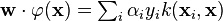
在这个表达式中，只有支持向量的系数 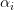 不等于 0 。
如果还是不怎么理解，不要紧，看下图:
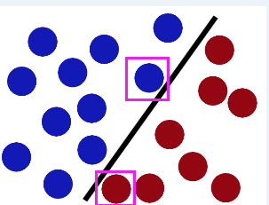
“支持向量” 就是图中用紫色框框圈出来的点...
Concept （相关概念）¶
我们先看一张图

linearly separable （线性可分）: 如上图中的两组数据，它们之间已经分的足够开了，因此很容易就可以在图中画出一条直线将两组数据点分开。在这种情况下，这组数据就被称为线性可分数据。
separating hyperplane（分隔超平面）: 上述将数据集分隔开来的直线称为分隔超平面。
hyperplane（超平面）: 在上面给出的例子中，由于数据点都在二维平面上，所以此时分隔超平面就只是一条直线。但是，如果所给的数据集是三维的，那么此时用来分隔数据的就是一个平面。显而易见，更高纬度的情况可以依此类推。如果数据是 1024 维的，那么就需要一个 1023 维的某某对象（不是你们的男（女）票）来对数据进行分隔。这个 1023 维的某某对象到底应该叫什么呢？ N-1 维呢？该对象被称为超平面，也就是分类的决策边界。分布在超平面一侧的所有数据都属于某个类别，而分布在另一侧的所有数据则属于另一个类别。
margin（间隔）: 我们希望能通过上述的方式来构建分类器，即如果数据点离决策边界越远，那么其最后的预测结果也就越可信。既然这样，我们希望找到离分隔超平面最近的点，确保它们离分隔面的距离尽可能远。这里所说的点到分隔面的距离就是 间隔。我们希望间隔尽可能地大，这是因为如果我们犯错或者在有限数据上训练分类器的话，我们希望分类器尽可能健壮。
支持向量（support vector） : 就是上面所说的离分隔超平面最近的那些点。
分类器 : 分类器就是给定一个样本的数据，判定这个样本属于哪个类别的算法。例如在股票涨跌预测中，我们认为前一天的交易量和收盘价对于第二天的涨跌是有影响的，那么分类器就是通过样本的交易量和收盘价预测第二天的涨跌情况的算法。
特征 : 在分类问题中，输入到分类器中的数据叫做特征。以上面的股票涨跌预测问题为例，特征就是前一天的交易量和收盘价。
线性分类器 : 线性分类器是分类器中的一种，就是判定分类结果的根据是通过特征的线性组合得到的，不能通过特征的非线性运算结果作为判定根据。还以上面的股票涨跌预测问题为例，判断的依据只能是前一天的交易量和收盘价的线性组合，不能将交易量和收盘价进行开方，平方等运算。
How does it work? （SVM 原理）¶
1、引用知乎上 @简之 大佬的回答：¶
首先我们讲个故事:
在很久以前的情人节，大侠要去救他的爱人，但魔鬼和他玩了一个游戏。
魔鬼在桌子上似乎有规律放了两种颜色的球，说：“你用一根棍分开它们？要求：尽量在放更多球之后，仍然适用。”
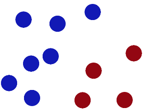
于是大侠这样放，干的不错？
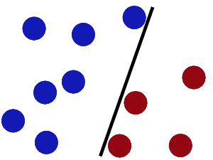
然后魔鬼，又在桌上放了更多的球，似乎有一个球站错了阵营。
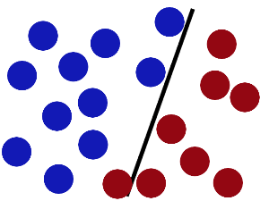
SVM 就是试图把棍放在最佳位置，好让在棍的两边有尽可能大的间隙。
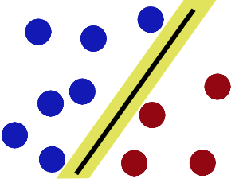
现在即使魔鬼放了更多的球，棍仍然是一个好的分界线。
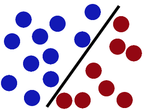
然后，在 SVM 工具箱中有另一个更加重要的 trick。 魔鬼看到大侠已经学会了一个 trick ，于是魔鬼给了大侠一个新的挑战。
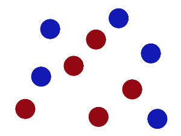
现在，大侠没有棍可以很好帮他分开两种球了，现在怎么办呢？当然像所有武侠片中一样大侠桌子一拍，球飞到空中。然后，凭借大侠的轻功，大侠抓起一张纸，插到了两种球的中间。
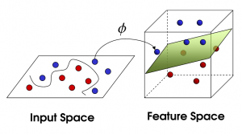
现在，从魔鬼的角度看这些球，这些球看起来像是被一条曲线分开了。
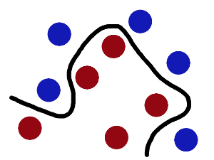
再之后，无聊的大人们，把这些球叫做 「data」，把棍子叫做 「classifier」, 最大间隙 trick 叫做「optimization」， 拍桌子叫做「kernelling」, 那张纸叫做「hyperplane」 。
有梯子的童鞋，可以看一下这个地方，看视频来更直观的感受：
https://www.youtube.com/watch?v=3liCbRZPrZA
2、引用知乎 @开膛手水货 大佬的回答，我认为是超级通俗的一个版本：¶
支持向量机是用来解决分类问题的。
先考虑最简单的情况，豌豆和米粒，用晒子很快可以分开，小颗粒漏下去，大颗粒保留。
用一个函数来表示就是当直径 d 大于某个值 D ，就判定为豌豆，小于某个值就是米粒。
d>D, 豌豆
d<D,米粒
在数轴上就是在d左边就是米粒，右边就是绿豆，这是一维的情况。
但是实际问题没这么简单，考虑的问题不单单是尺寸，一个花的两个品种，怎么分类？
假设决定他们分类的有两个属性，花瓣尺寸和颜色。单独用一个属性来分类，像刚才分米粒那样，就不行了。这个时候我们设置两个值 尺寸 x 和颜色 y.
我们把所有的数据都丢到 x-y 平面上作为点，按道理如果只有这两个属性决定了两个品种，数据肯定会按两类聚集在这个二维平面上。
我们只要找到一条直线，把这两类划分开来，分类就很容易了，以后遇到一个数据，就丢进这个平面，看在直线的哪一边，就是哪一类。
比如 x+y-2=0 这条直线，我们把数据 (x,y) 代入，只要认为 x+y-2>0 的就是 A 类， x+y-2<0 的就是 B 类。
以此类推，还有三维的，四维的，N维的 属性的分类，这样构造的也许就不是直线，而是平面，超平面。
一个三维的函数分类 ：x+y+z-2=0，这就是个分类的平面了。
有时候，分类的那条线不一定是直线，还有可能是曲线，我们通过某些函数来转换，就可以转化成刚才的哪种多维的分类问题，这个就是核函数的思想。
例如：分类的函数是个圆形 x2+y2-4=0 。这个时候令 x^2=a ; y^2=b ,还不就变成了a+b-4=0 这种直线问题了。
这就是支持向量机的思想。
3、引用 @胡KF 大佬的回答（这个需要一些数学知识）：¶
如图的例子，（训练集）红色点是我们已知的分类1，（训练集）蓝色点是已知的分类2，我们想寻找一个分界超平面（图中绿线）（因为示例是二维数据点，所以只是一条线，如果数据是三维的就是平面，如果是三维以上就是超平面）把这两类完全分开，这样的话再来一个样本点需要我们预测的话，我们就可以根据这个分界超平面预测出分类结果。
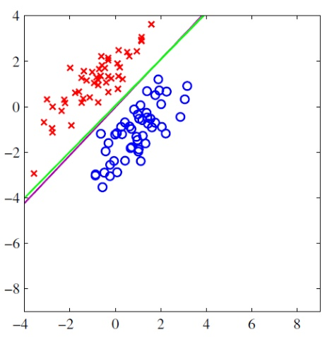
那我们如何选择这个分类超平面呢？从数学上说，超平面的公式是,也就是说如何选取这个 （是个向量）。
传统方法是根据最小二乘错误法（least squared error），首先随便定选取一个随机平面，也就是随机选取 和 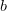，然后想必会在训练集中产生大量的错误分类，也就是说，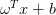 结果应该大于 0 的时候小于 0 ，应该小于 0 的时候大于 0 。这时候有一个错误损失，也就是说对于所有错误的分类，他们的平方和（least squared error） 为: 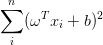 , 最小二乘法的目标就是让这个值趋于最小，对 求导取 0 ，采用梯度下降算法，可以求出错误平方和的极值，求出最优的 ，也就是求出最优的超平面。（可以证明，如果基函数是指数族函数，求出的超平面是全局最优的）。
那我们 SVM 算法的思路是怎样的呢？
不同于传统的最小二乘策略的思想，我们采用一种新的思路，这个分界面有什么样的特征呢？
第一，它 “夹” 在两类样本点之间；第二，它离两类样本点中所有 “离它最近的点” ，都离它尽可能的远。如图所示：
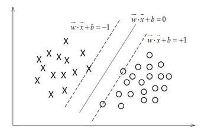
在虚线上的点，就是我们所找到的离分解超平面最近的样本点，X 类中找到了一个，O 类找到了两个。我们需要分类超平面离这三个样本点都尽可能的远，也就是说，它处在两条虚线的中间。这就是我们找到的分界超平面。
另外，这里我们就可以解释什么是 “支持向量” 了，支持向量就是虚线上的离分类超平面最近的样本点，因为每一个样本点都是一个多维的向量，向量的每一个维度都是这个样本点的一个特征。比如在根据身高，体重，特征进行男女分类的时候，每一个人是一个向量，向量有两个维度，第一维是身高，第二维是体重。
介绍完 SVM 的基本思想，我们来探讨一下如何用数学的方法进行 SVM 分类。
首先我们需要把刚刚说的最大间隔分类器的思想用数学公式表达出来。先定义几何间隔的概念，几何间隔就是在多维空间中一个多维点到一个超平面的距离，根据向量的知识可以算出来：
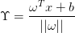
然后对于所有的支持向量，使他们到超平面 的距离最大，也就是
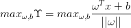
因为对于所有支持向量，他们 的值都是一定的，我们假设恒等于 1 ，那么上式变成了 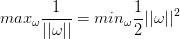 ,并且对于所有的样本点，满足 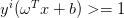 的约束，因此，可以利用拉格朗日乘数法计算出它的极值。也就是求出这个超平面。
推导过程略为复杂，详细了解可以参考凸二次规划知识，结合 SMO 算法理解 SVM 计算超平面的详细过程。
总之，在计算的过程中，我们不需要了解支持向量以外的其他样本点，只需要利用相对于所有样本点来说为数不多的支持向量，就可以求出分类超平面，计算复杂度大为降低。
4、引用知乎 @靠靠靠谱 大佬的理解（这个需要的数学知识更加厉害一点）：¶
先看思维导图：
- 左边是求解基本的SVM问题
- 右边是相关扩展
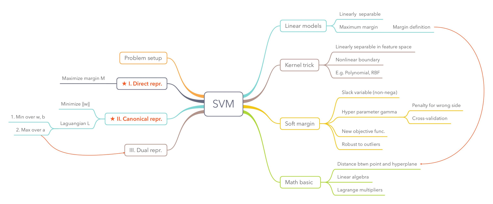
什么是 SVM ？
Support Vector Machine, 一个普通的 SVM 就是一条直线罢了，用来完美划分 linearly separable 的两类。但这又不是一条普通的直线，这是无数条可以分类的直线当中最完美的，因为它恰好在两个类的中间，距离两个类的点都一样远。而所谓的 Support vector 就是这些离分界线最近的『点』。如果去掉这些点，直线多半是要改变位置的。可以说是这些 vectors （主，点点） support （谓，定义）了 machine （宾，分类器）...

所以谜底就在谜面上啊朋友们，只要找到了这些最靠近的点不就找到了 SVM 了嘛。
如果是高维的点，SVM 的分界线就是平面或者超平面。其实没有差，都是一刀切两块，我就统统叫直线了。
怎么求解 SVM ？
关于这条直线，我们知道
(1)它在离两边一样远，(2)最近距离就是到support vector，其他距离只能更远。
于是自然而然可以得到重要表达 I. direct representation
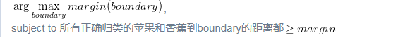
（可以把 margin 看作是 boundary 的函数，并且想要找到使得是使得 margin 最大化的boundary，而 margin(*) 这个函数是：输入一个 boundary ，计算（正确分类的）所有苹果和香蕉中，到 boundary 的最小距离。）
又有最大又有最小看起来好矛盾。实际上『最大』是对这个整体使用不同 boundary 层面的最大，『最小』是在比较『点』的层面上的最小。外层在比较 boundary 找最大的 margin ，内层在比较点点找最小的距离。
其中距离，说白了就是点到直线的距离；只要定义带正负号的距离，是 {苹果+1} 面为正 {香蕉-1} 面为负的距离，互相乘上各自的 label 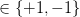 ，就和谐统一民主富强了。
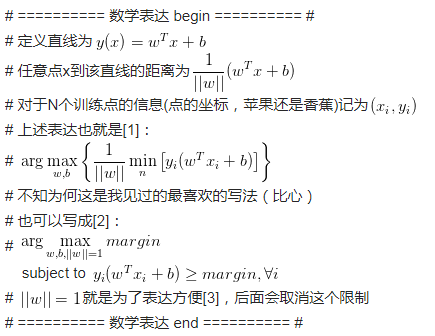
到这里为止已经说完了所有关于SVM的直观了解，如果不想看求解，可以跳过下面一大段直接到 objective function 。
直接表达虽然清楚但是求解无从下手。做一些简单地等价变换（分母倒上来）可以得到 II. canonical representation （敲黑板）
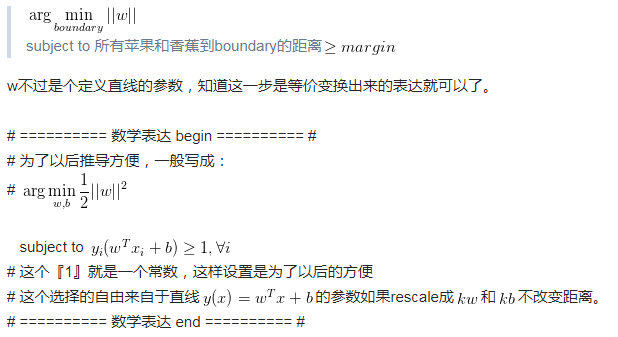
要得到 III. dual representation 之前需要大概知道一下拉格朗日乘子法 (method of lagrange multiplier)，它是用在有各种约束条件(各种 "subject to" )下的目标函数，也就是直接可以求导可以引出 dual representation（怎么还没完摔）
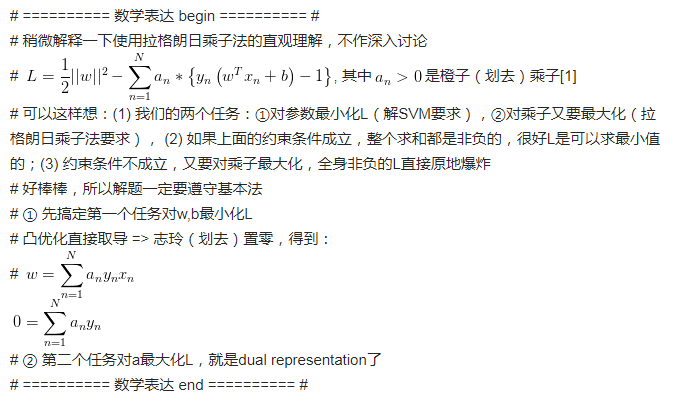
稍微借用刚刚数学表达里面的内容看个有趣的东西：
还记得我们怎么预测一个新的水果是苹果还是香蕉吗？我们代入到分界的直线里，然后通过符号来判断。
刚刚w已经被表达出来了也就是说这个直线现在变成了： 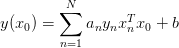
看似仿佛用到了所有的训练水果，但是其中 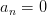 的水果都没有起到作用，剩下的就是小部分靠边边的 Support vectors 呀。
III. dual representation
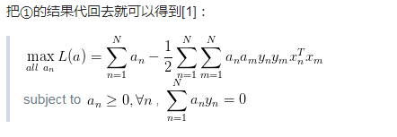
如果香蕉和苹果不能用直线分割呢？
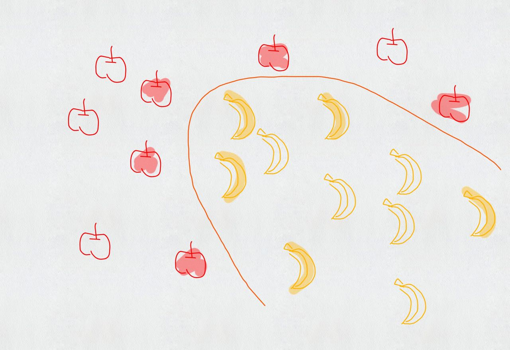
Kernel trick.
其实用直线分割的时候我们已经使用了 kernel ，那就是线性 kernel , 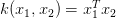
如果要替换 kernel 那么把目标函数里面的内积全部替换成新的 kernel function 就好了，就是这么简单。
第一个武侠大师的比喻已经说得很直观了，低维非线性的分界线其实在高维是可以线性分割的，可以理解为——『你们是虫子！』分得开个p...（大雾）
如果香蕉和苹果有交集呢？
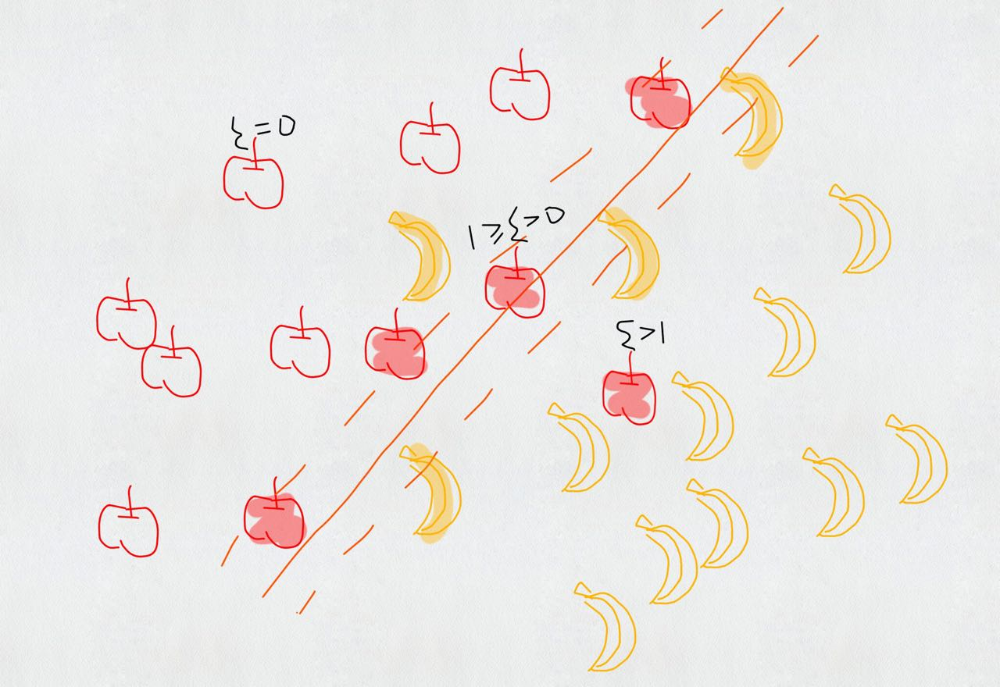
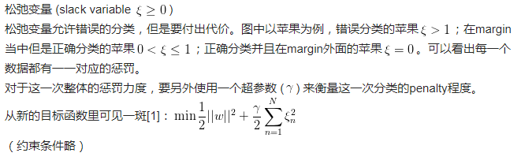
如果还有梨呢？
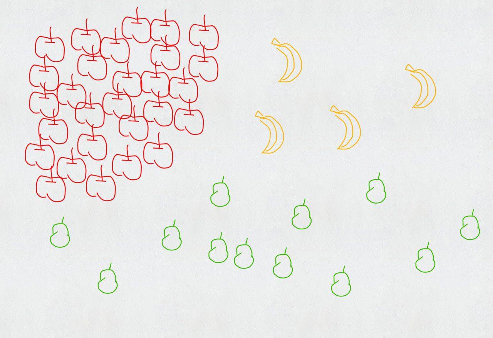
可以每个类别做一次 SVM：是苹果还是不是苹果？是香蕉还是不是香蕉？是梨子还是不是梨子？从中选出可能性最大的。这是 one-versus-the-rest approach。
也可以两两做一次 SVM：是苹果还是香蕉？是香蕉还是梨子？是梨子还是苹果？最后三个分类器投票决定。这是 one-versus-one approace。
但这其实都多多少少有问题，比如苹果特别多，香蕉特别少，我就无脑判断为苹果也不会错太多；多个分类器要放到一个台面上，万一他们的 scale 没有在一个台面上也未可知。
课后题： 1、vector 不愿意 support 怎么办？ 2、苹果好吃还是香蕉好吃？
最后送一张图我好爱哈哈哈 (Credit: Burr Settles)
[1] Bishop C M. Pattern recognition[J]. Machine Learning, 2006, 128.
[2] Friedman J, Hastie T, Tibshirani R. The elements of statistical learning[M]. Springer, Berlin: Springer series in statistics, 2001.
[3] James G, Witten D, Hastie T, et al. An introduction to statistical learning[M]. New York: springer, 2013.
理解和应用¶
1、DataMining （数据挖掘）¶
做数据挖掘应用的一种重要算法，也是效果最好的分类算法之一。
举个例子，就是尽量把样本中的从更高纬度看起来在一起的样本合在一起，比如在一维（直线）空间里的样本从二维平面上可以分成不同类别，而在二维平面上分散的样本如果从第三维空间上来看就可以对他们做分类。
支持向量机算法目的是找出最优超平面，使分类间隔最大，要求不但正确分开，而且使分类间隔最大，在两类样本中离分类平面最近且位于平行于最优超平面的超平面上的点就是支持向量，为找到最优超平面只要找到所有支持向量即可。
对于非线性支持向量机，通常做法是把线性不可分转化成线性可分，通过一个非线性映射将低维输入空间中的数据特性映射到高维线性特征空间中，在高维空间中求线性最优分类超平面。
2、scikit-learn (sklearn)¶
SVM 的基本原理基本上已经说的差不多了，下面咱们就来看看 SVM 在实际应用该如何使用了。幸运的是，在 python 下面，sklearn 提供了一个非常好用的机器学习算法，我们调用相关的包就好啦。

小结¶
学习 SVM 需要有耐心，当初研究这个部分的时候，炼哥（github jiangzhonglian），法超大佬（github geekidentity），羊三大佬（github sheepmen），庭哥（github wangyangting）都花费了好长时间，我只能躲在角落发抖....